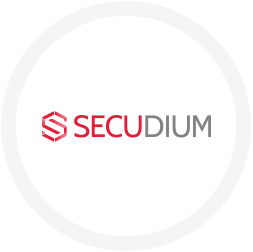

Connect everything, Secure everything
Digital Transformation 시대, 다양한 장비가 인터넷에 연결되고, 방대한 양의 데이터가 발생하고 있습니다. 기업은 이렇게 발생한 데이터를 수집, 가공하여 새로운 사업에 적용하고 다양한 가치를 창출하기 위해 많은 노력을 하고 있습니다. 하지만 기업이 지금까지 다뤄보지 못한 데이터로 인해 많은 어려움을 겪고 있는 것이 현실입니다.
Secudium은 SK인포섹 보안서비스의 기반이 되는 데이터 관리 플랫폼입니다.

Secudium은 시대의 변화와 기업의 니즈에 발맞춰 하나의 플랫폼에서 다양한 산업군의 이기종 장비를 연결하고, 장비에서 생성되는 데이터를 수집합니다. 수집된 데이터는 정규화 과정을 거쳐, 기업이 즉시 활용할 수 있는 정보로 재생산됩니다. 기업은 Secudium에서 생산된 정보를 바탕으로 가치를 창출하고, 신규/기존 비즈니스 영역을 넓힐 수 있습니다.